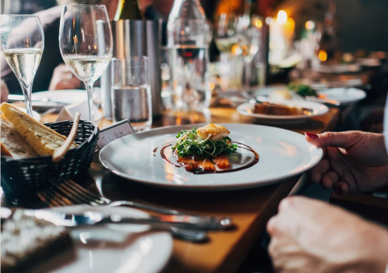
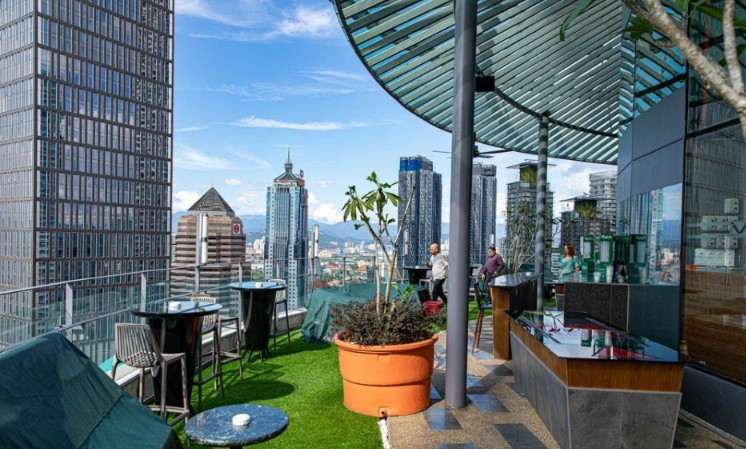

Discover
Browse a handpicked list of restaurants and learn about their cuisine, location and estimated prices.
GOOD FOOD, GREAT MOMENTS
DineFinder helps you discover restaurants around Kuala Lumpur and Subang Jaya, get ideas based on your mood, and plan your next meal with ease.

YOUR DINING COMPANION
From a quick Korean meal to a special rooftop dinner, explore places that suit your budget, taste and occasion.
Browse a handpicked list of restaurants and learn about their cuisine, location and estimated prices.
Answer a few simple questions and let our recommendation tool suggest a suitable dining place.
Submit your reservation details and view the deposit amount before sending your request.
A FEW LOCAL FAVOURITES

